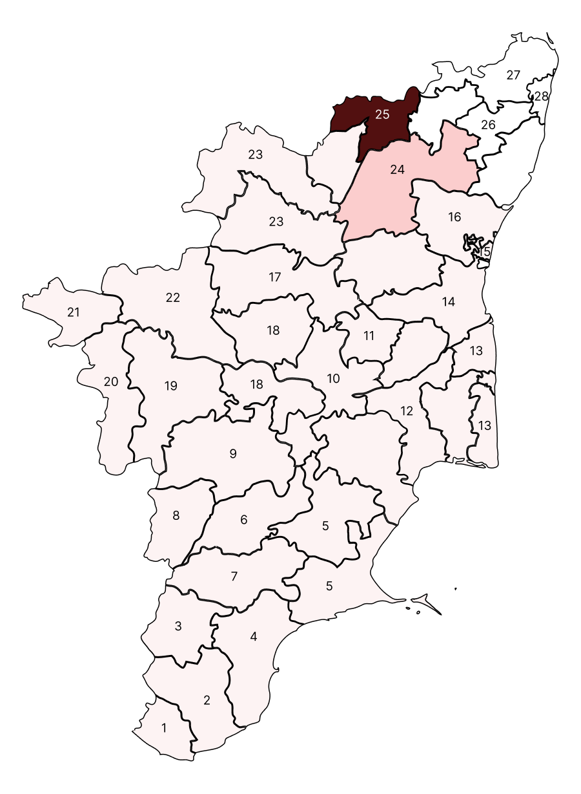
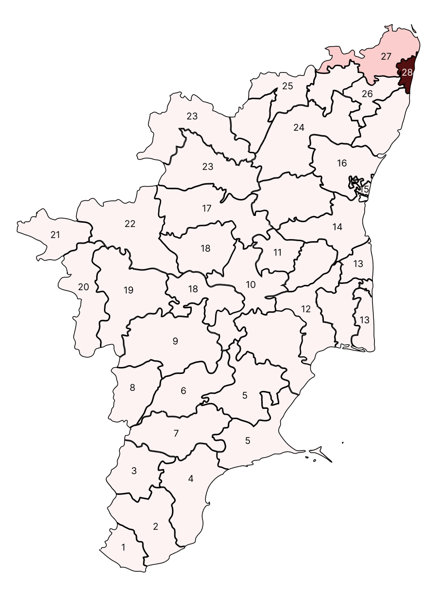
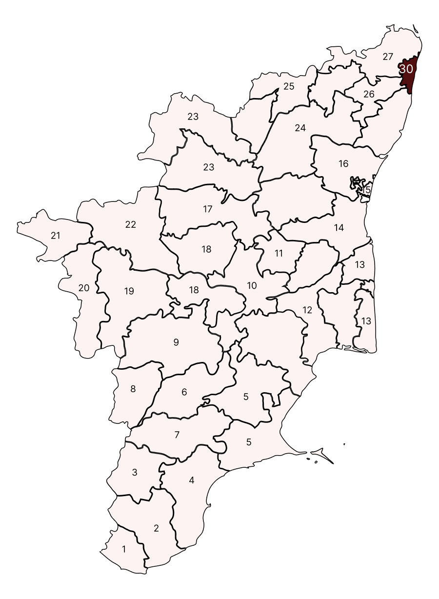
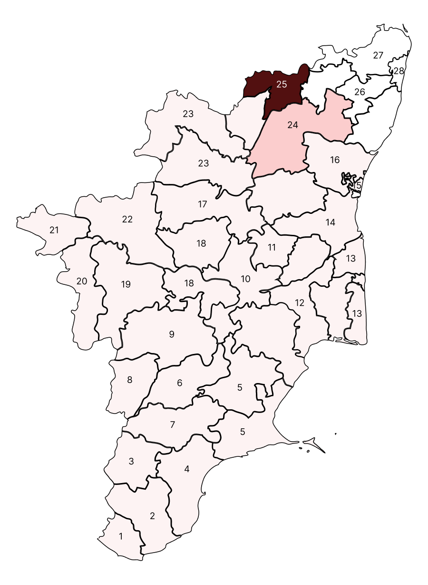
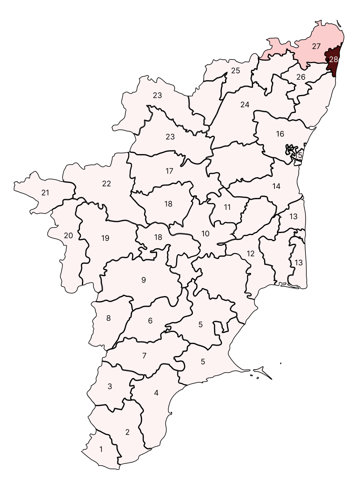
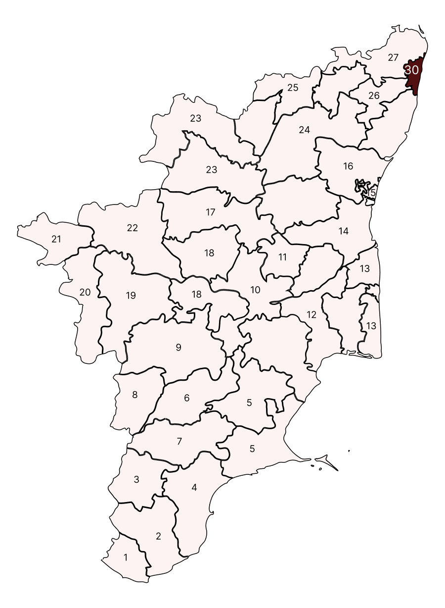

Day 2
Thirunelveli
Day 1
Kanniyakumari
Day 2
Thirunelveli
Day 3
Thenkasi
Day 4
Thoothukudi
Day 5
Ramnadapuram
Day 5
Sivagangai
Day 6
Madurai
Day 7
Virudhunagar
Day 8
Theni
Day 9
Dindigul
Day 10
Thiruchirappalli
Day 11
Perambalur
Day 12
Thanjavur
Day 13
Nagapattinam
Day 13
Mayiladuthurai
Day 14
Chidambaram / Kadalur
Day 15
Puducherry
Day 16
Villupuram / Kallakkurichi
Day 17
Salem
Day 18
Namakkal
Day 18
Karur
Day 19
Thiruppur / Pollachi
Day 20
Coimbatore
Day 21
Nilgiris
Day 22
Erode
Day 23
Darmapuri
Day 23
Krishnagiri
Day 24
Thiruvannamalai / Arani
Day 25
Vellore
Day 26
Kanchipuram / Sriperumbudur
Day 27
Arcot / Thiruvallur
Day 28
North Chennai
Day 29
South Chennai
Day 30
Central Chennai
 





| S. No | Program Title | Concept | Program Type | Duration |
|---|---|---|---|---|
| 1 | Thoguthi Alasal | Complete information about an MP constituency, including the number of elections held, the parties that have won, demographics, and vote percentages | Collection | 3-5 Minutes |
| 2 | Kalam Eppadi? | Political background of the constituency, lifestyle of the people, and social structure. | Collection | 3-5 Minutes |
| 3 | Manmanam | Local food customs, arts, historical background, and environment. | Collection | 3-5 Minutes |
| 4 | MP’s Report Card | Assessment of the MP's performance, including constituents' expectations, promises made and fulfilled, attendance in parliament, number of questions raised, and individual bills brought. | Collection | 5-8 Minutes |
| 5 | Nerapada Pesu - Election Special | Special Election Talk program with guests from Chennai, Madurai, Coimbatore, Trichy, and Nellai. | Live | 60 Minutes |
| 6 | Thalaivargaludan Puthiya Thalaimurai | Interviews with party leaders or second-tier leaders. | Recorded | 60 Minutes |
| 7 | Modhum Vetpalargal, Kanikkum Vaakkalargal | Constituency wise Candidates profiling (post Candidate Announcement) | Recorded | 60 Minutes |
| 8 | Mudhal Thalaimuraiyudan Puthiya Thalaimurai | Discussions in colleges focusing on young voters (18+). | Recorded | 60 Minutes |
| 9 | Nadhikkarai Arasiyal | Discussion on river-centered politics, including the history of the river in respective towns, people's relationship with it, lifestyle of those living on its banks, and its political significance. | Live | 30 Minutes |
| 10 | Podungamma Votu | Conducting awareness programs in collaboration with district administrations to promote 100% polling and honest voting. | Live | 10 Minutes |
| 11 | Konjam Soru, Konjam Varalaru | Exploring popular cuisines in respective towns, visiting local eateries, and discussing politics with local celebrities while dining. | Recorded | 30 Minutes |
| 12 | Katchi, Kolgao, Koottani | Compilation of negotiations, promises, and daily events related to electoral alliances. | Recorded | - |
| 13 | Pechu, Petti, Arasiyal | Compilation of politically important statements, interviews, and speeches of party leaders. | Collection | |
| 14 | Pogira Pokkil... | Speeches of impractical leaders, emphasizing humorous speeches. | Collection | 5 Minutes |
| 15 | Election - Big Story | Live discussions with guests from their respective constituency on local politics. | Live | |
| 16 | Makkaludan Puthiya Thalaimurai | Visiting public places like tea shops, restaurants, and markets for moderated discussions on town politics. | Recorded | 30 Minutes |
| 17 | Pesappadum Peyargal | Names and intro of potential candidates from DMK, AIADMK, and BJP alliance parties, along with reasons for their candidacy. | Live/ Recorded | 3 Minutes |
| 18 | Nayampada Sol | Short-term exclusive interviews with political party leaders. | Recorded | 4-5 Minutes |
| 19 | Solla Marandha Kadhai | Compilation of interesting story narratives related to elections and politics. | Recorded | 30 Minutes (Twice a week) |
| 20 | Puthuputhu Arthangal - Elections Special | Discussion of election-related news from daily newspapers. | Live | 30 Minutes |

Title Sponsor
Co-Powered By